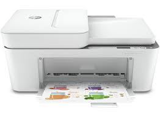

|  |
Especificações PrincipaisMemória: Memória interna máxima: 256 MB Conectividade: Ethernet LAN: Não Tecnologia de impressão móvel: Apple AirPrint; Mopria Certified; HP Smart Wi-Fi: Sim, banda dupla integrada Interfaces standard: 1 Hi-Speed USB 2.0; 1 Wi-Fi 802.11ac (banda dupla) Velocidade de impressão : Primeira página a sair (cores, US letter): Até 13 segundos Primeira página a sair (preto, A4): Até 18 segundos Velocidade de impressão (cores, qualidade de rascunho, A4/US Letter): Até 20 ppm Velocidade de impressão (cores, qualidade normal, A4/US Letter): Até 10 ppm Velocidade de impressão (preto, qualidade normal, A4/US Letter): Até 15 ppm Velocidade de impressão (preto, qualidade de rascunho, A4/US Letter): Até 28 ppm Detalhes técnicos: Impressão Duplex: Automática (standard) Pronto para trabalhar em rede: Não Manipulação de papel: Dimensão máxima de papel ISO A-series: A4 Tamanhos de envelope: DL Tamanhos ISO série A (A0…A9): A4; A5; A6 Tipos de suporte de impressão: Papel comum, papel fotográfico, papel para brochura Monitores: Visor a cores: Não Visor incorporado: Não Tecnologia de impressão: Cor(es) dos cartuchos de impressão: Preto, Tricolor Número de tinteiros: 2 (1 preto, 1 tricolor) Resolução Máxima: 4800 x 1200 dpi otimizados em cores (ao imprimir de um computador em papéis fotográficos selecionados HP e 1200 dpi de entrada) Capacidade de entrada: Número máximo de inputs de papel: 1 Número de inputs de papel: 1 Capacidade standard de entrada (folhas): Até 100 folhas Capacidade de saída: Capacidade máxima de saída (folhas): Até 25 folhas Capacidade standard de saída (folhas): Até 25 folhas Software: Sistema operativo Windows suportado: Windows 10, 7 Sistema operativo Mac suportado: macOS Sierra 10.12 (anteriormente OS X), macOS High Sierra 10.13, macOS Mojave 10.14, macOS Catalina 10.15, macOS Big Sur 11 95,00€Quer Comprar ou saber mais informações? Contacte-nos! |